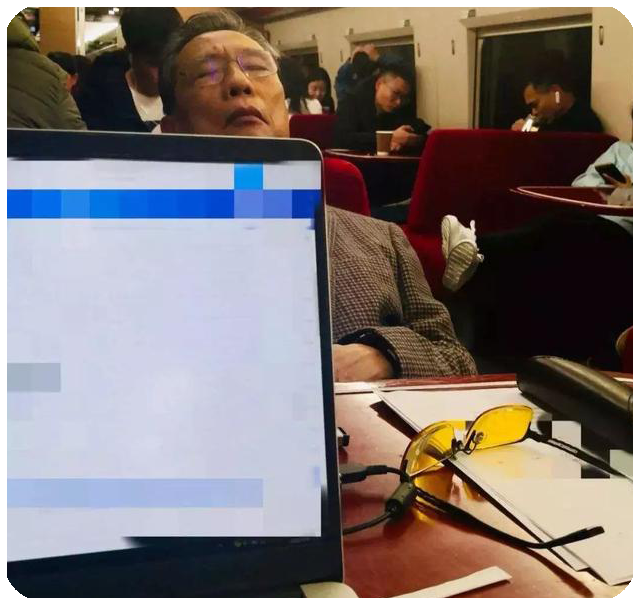
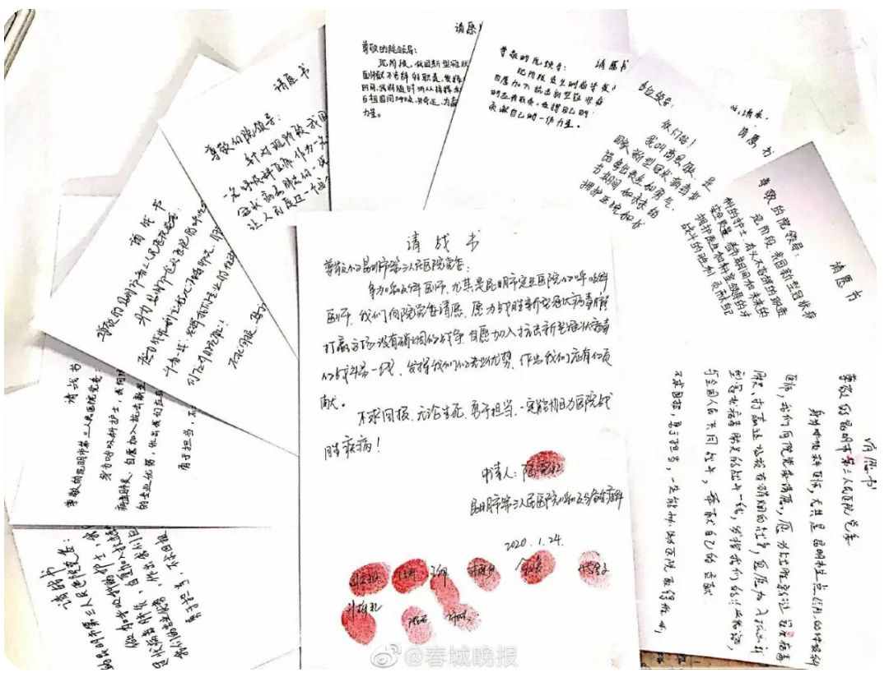
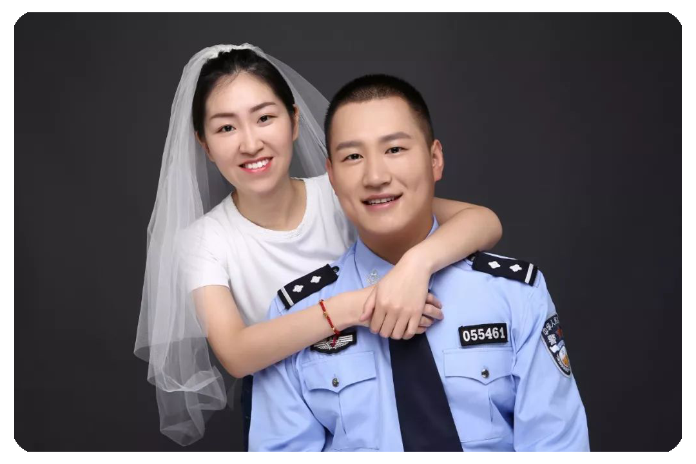
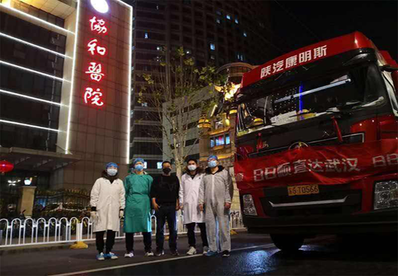
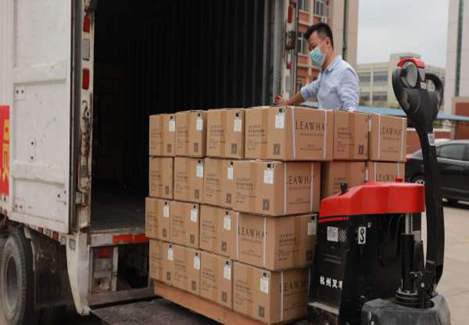
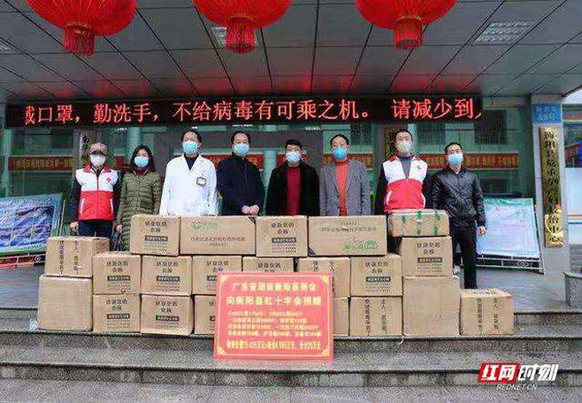

齐心抗“疫”，“疫”路前行
截至2月20日，国家、部队和各省市已累计派出255支共32572名医护人员支援武汉，有力解决武汉自身救治力量严重不足的问题，正是这群最可爱的人们让世界看到了中国力量，让中国逐步战胜疫情。
武汉火神山医院
武汉火神山医院位于蔡甸区知音湖大道，是参照2003年抗击非典期间北京小汤山医院模式，在武汉职工疗养院建设一座专门医院，集中收治新型冠状病毒肺炎患者。医院总建筑面积3.39万平方米，编设床位1000张，开设重症监护病区、重症病区、普通病区，设置感染控制、检验、特诊、放射诊断等辅助科室，不设门诊。
2020年1月23日，武汉市城建局紧急召集中建三局等单位举行专题会议，2020年1月24日，武汉火神山医院相关设计方案完成；2020年1月29日，武汉火神山医院建设已进入病房安装攻坚期；2020年2月2日上午，武汉火神山医院正式交付。从方案设计到建成交付仅用10天，被誉为中国速度。
2020年2月4日，武汉火神山医院开始正式接诊新型冠状病毒感染的肺炎确诊患者，并于当日9时许收治首批患者。
2020年2月13日下午4时，经过火神山医院医护人员8天的精心诊治，7位新冠肺炎患者的临床症状和核酸检测达到出院指标，成为火神山医院第一批痊愈出院患者。
2020年3月10日上午，习近平考察火神山医院，看望慰问患者和医务工作者。
武汉雷神山医院
武汉雷神山医院位于江夏区强军路，救治对象为各医院发热门诊和住院确诊的新型冠状病毒肺炎患者，医院充分借鉴非典时期“小汤山医院”的经验，只设住院不设门诊。全院共设床位1600张，分别为2个重症医学科病区、3个亚重症病区及27个普通病区，除重症病区外，病房均为2人间。设有一间手术室，用于住院期间需要手术治疗的新冠肺炎患者。医院还设置有心电诊断科、超声影像科、放射影像科及医学检验科等医技科室，能够满足新冠肺炎患者的辅助诊断要求。
2020年1月25日，武汉市决定建造武汉雷神山医院。1月28日上午11时，中国铁塔完成了武汉雷神山医院通信基站基础设施新建及改造任务。1月29日18时，国家电网武汉供电公司按期完成全部电力配套工程建设。
截至1月30日12时，武汉雷神山医院项目总体建设进度完成40%。2020年2月1日晚，武汉雷神山医院隔离病区首个完整病房样板正式完成。该类病房面积16.5平方米（3米×5.5米），分为卫生间、缓冲区和病房区三大区域。病房单元设计以“洁污分流、医患分流、人物分流”为原则，采用“三区两通道”设计，严格区别污染区及非污染区。雷神山医院将于2月5日交付使用。
2020年2月8日，武汉雷神山医院交付使用，当晚收治了首批患者。2月18日上午，武汉雷神山医院首例治愈患者出院。
疫情情况
当地时间3月9日，世卫组织在日内瓦召开新冠肺炎例行发布会，介绍疫情相关情况。会上，世卫组织总干事谭德塞表示，当前新冠肺炎在全球100多个国家地区蔓延，病例数超过10万，新冠肺炎成为大流行（病）的威胁已变得非常现实，但这将是历史上第一个可以控制的大流行（病），不会任由病毒摆布。
目前，中国、阿塞拜疆、韩国、沙特阿拉伯等多国已向世卫组织捐款，世卫组织已募集近3亿美元用于抗击新冠肺炎。世卫组织已把个人防护用品送至57个国家地区，接下来还会再为28个国家地区送去个人防护用品，并计划将实验室用品送至120个国家地区。
另据美国CNBC报道，世卫组织9日表示，中国超过8万例新冠肺炎确诊病例中，70%已经康复并出院，疫情正在结束。
致敬所有一线工作者：
“为众人抱薪者，不可使其冻毙于风雪。”牵动国人心的，不仅仅是疫情，而是与疫情紧紧相连的“他们”的安危。始终有人为我们负重前行，即使无法加入一线，但希望身为“我们”中的我，提笔落字，文字间亦能为他们遮避风雨，联结温馨。这是一场没有硝烟的“战争”。
在这次与疫情的对抗中，最令我感动的人就是八十四岁的钟南山爷爷。他为了我们每一个人的健康，站在一线同病毒做斗争，在疫情面前，这位耄耋老人是最有力的战士之一。从疫情发生至今，他从广州到武汉再到北京，实地了解疫情……八十四岁的钟南山爷爷就是这样奔波忙碌着，为的就是让我们全国人民不陷入恐慌，能直面疫情，科学预防疫情。让我们向钟南山院士致敬！
我们庆幸，我们生活在一个伟大的国家，在这个国家里，生活着一群可爱的人，他们为了人民的生命健康，不惜付出自身生命的代价。伟大的逆行者们，你们是这个世界上最可爱的人！我们必须致敬抗击疫情疫情的一线工作者！
没有人生来勇敢，正因为被需要，他们才选择了逆风前行，坚定地履行职责。疫情的阴霾之下，他们远离家人，奔赴战“疫”前线！
 1月28日，国家卫健委高级别专家组组长、中国工程院院士钟南山接受媒体采访，强调，目前依然不要出行，他请大家不要乱跑，特别是武汉一带的更是如此。结果84岁高龄的他，将自已的安危置之度外，身临一线，冒着被感染的风险前往武汉，和医护人员一道，指导抗击此次疫病。  在这个春节，中国人最喜庆的节日里有一群最可爱的人离开家乡奔向武汉，集体决定与疫情抗争到底，她们只不过是一群孩子，换了一身衣服，学着前辈的样子，在和死神抢人罢了。  晋城市公安局交通警察民警李俊杰原定2020年02月12日（农历正月十九）的婚期，因疫情防控工作的开展，李俊杰和女友尚巧娜都在战斗在疫情防控一线，工作任务重，为避免因婚礼人员聚集造成传染，双方都是国家公务人员，更应该响应国家号召，经二人商量经双方父母同意决定延期举办婚礼。隔离病毒， 但不隔离爱， 因为爱是桥梁
此刻我们都是一家人
- 
日日顺物流已将来自海外的22批次捐赠物资顺利送达抗疫一线
- 
守护最美抗疫人,梨花leawha捐赠百万物资驰援一线女医护
- 
广东省湖南衡阳县商会第二批捐赠物资驰援一线医院
待到冰雪融化春暖花开，我们再去看你
武汉加油！